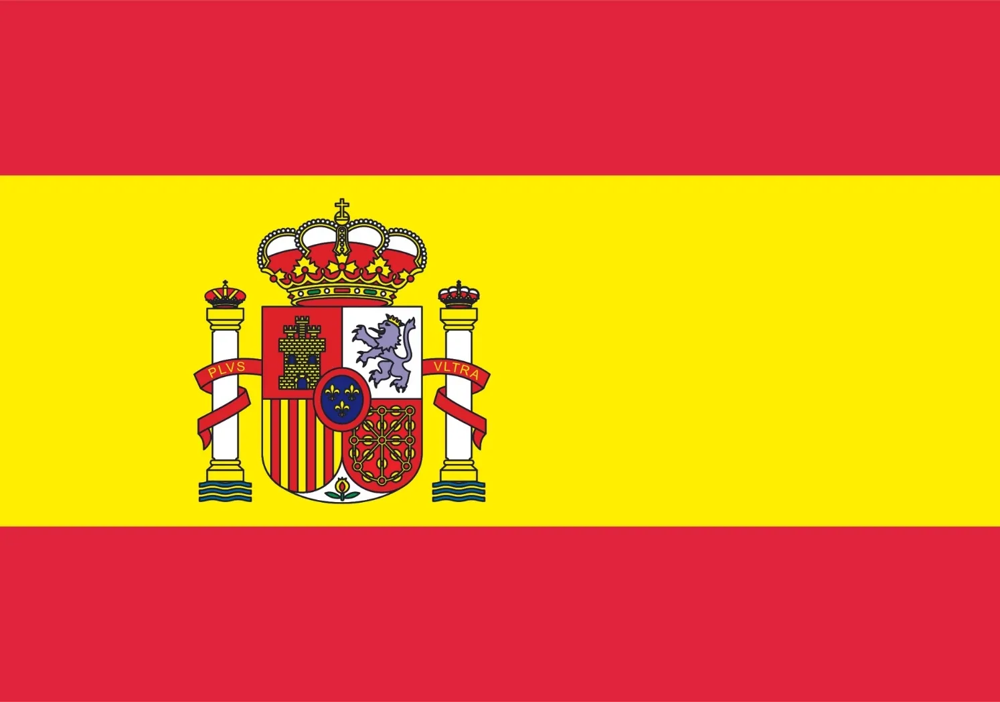
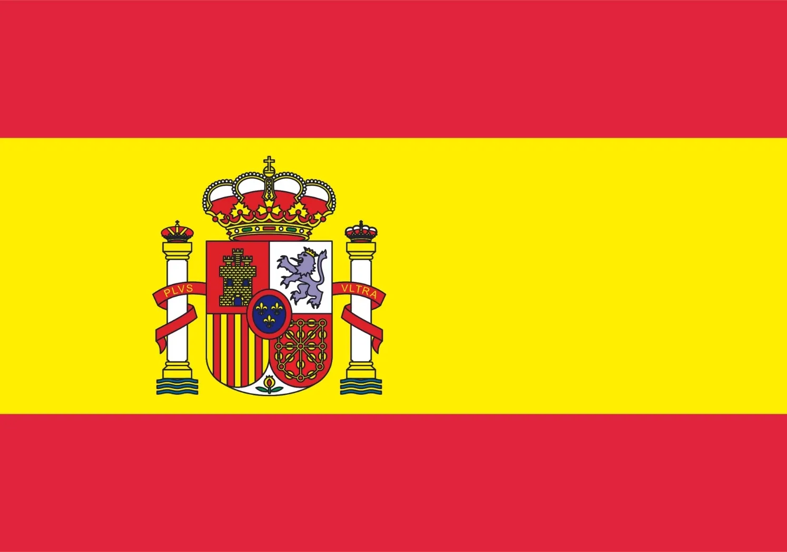

O projeto semestral tem sido um novo desafio para o ensino médio, trazendo consigo muito aprendizado e muitas lições.
A cada dia aprendemos mais coisas que podemos implementar no nosso projeto. Toda semana, uma lição inovadora.
Acredito que as lições nos ajudam, porém acredito também que as lições de manhã e o projeto à tarde acabam me atrapalhando um pouco, pois não consigo me organizar bem, e acredito que os colegas também...
Apesar de algumas lições serem muito necessárias, algumas confundem minha cabeça, bagunçando o meu trabalho.
Esse ano foi bem pesado; aprendi muita coisa, mas acho que no ano que vem as coisas talvez piorem, isso é bem frustrante!